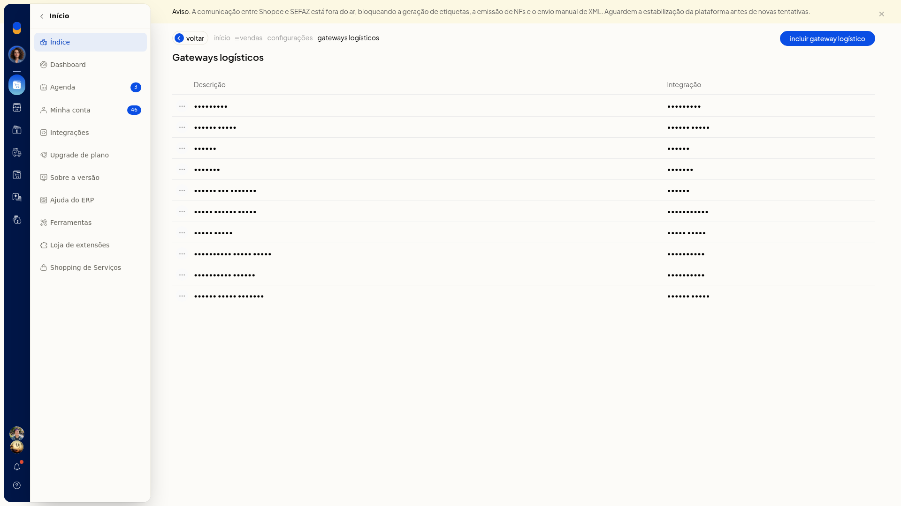

Excluir um gateway logístico
Pré-requisitos
- Se Gateways logísticos não aparecer para você, peça acesso ao administrador da conta.
Instruções
-
Acesse Configurações > Configurações ERP.
-
Abra a aba Vendas.

-
Na seção Expedição e Logística, clique em Gateways logísticos.

-
Na linha do gateway, confira Descrição e Integração e abra o menu de ações.

-
Clique em Excluir.
Informações adicionais
- No menu de ações da linha, a opção visível é Excluir.